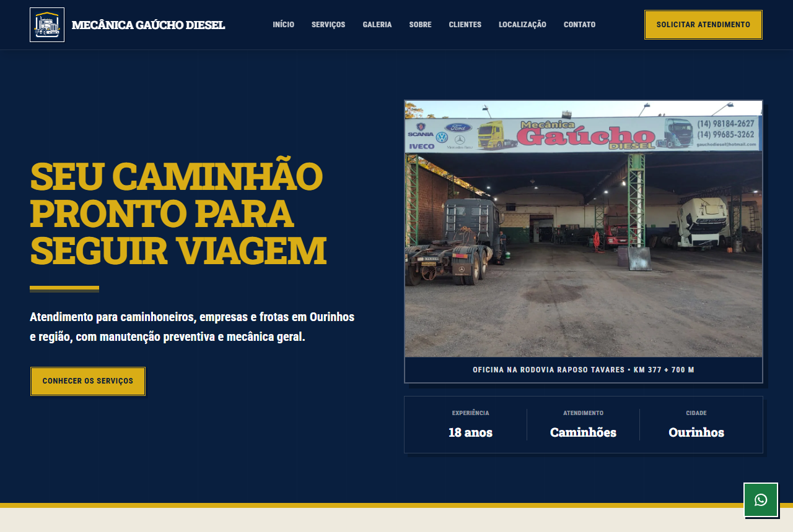
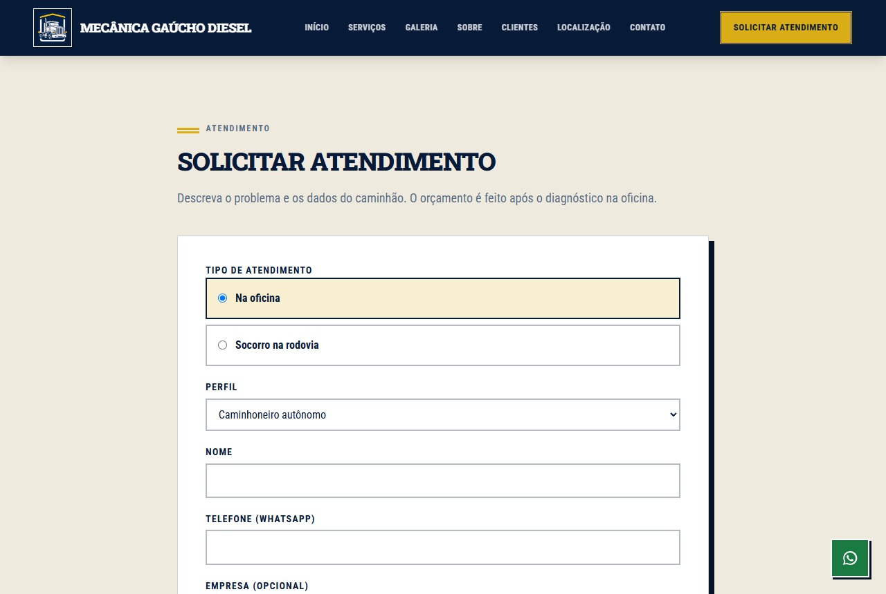
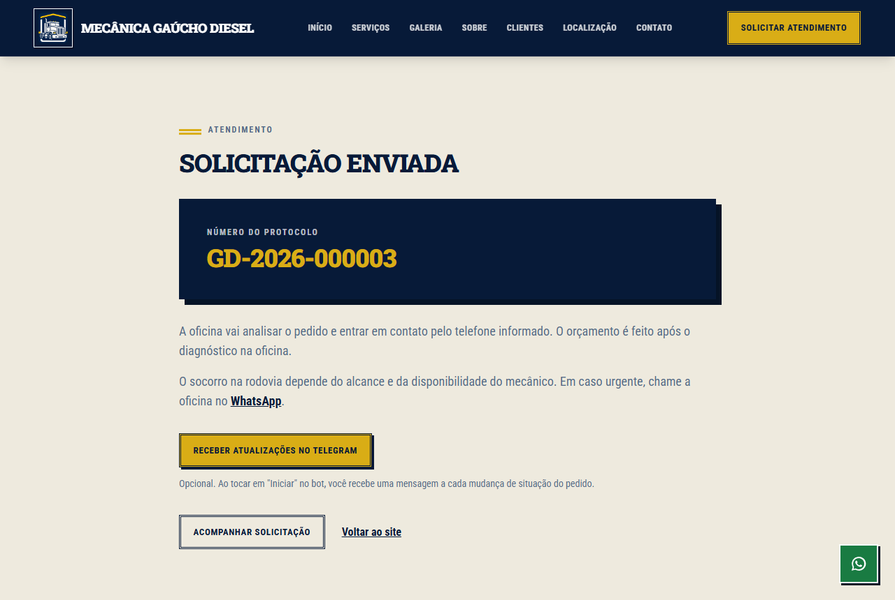
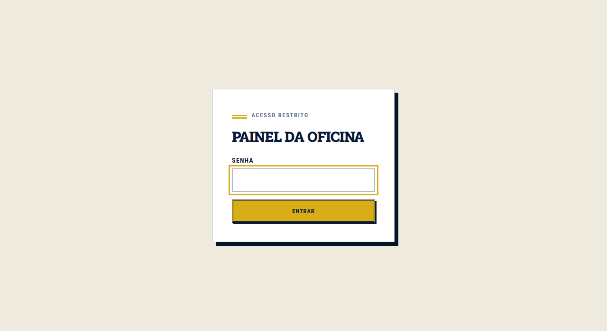
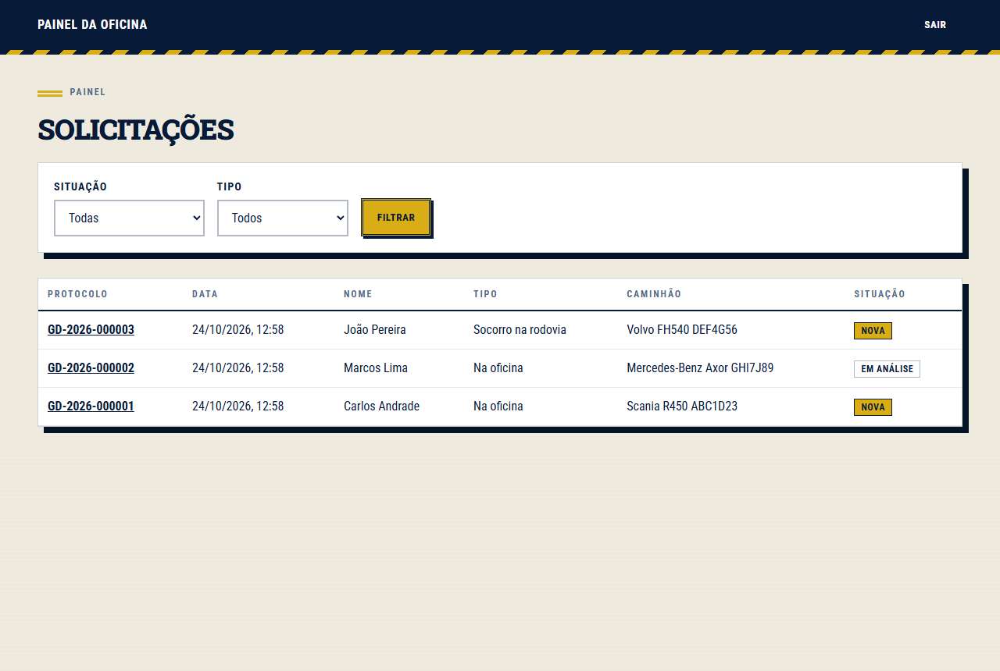
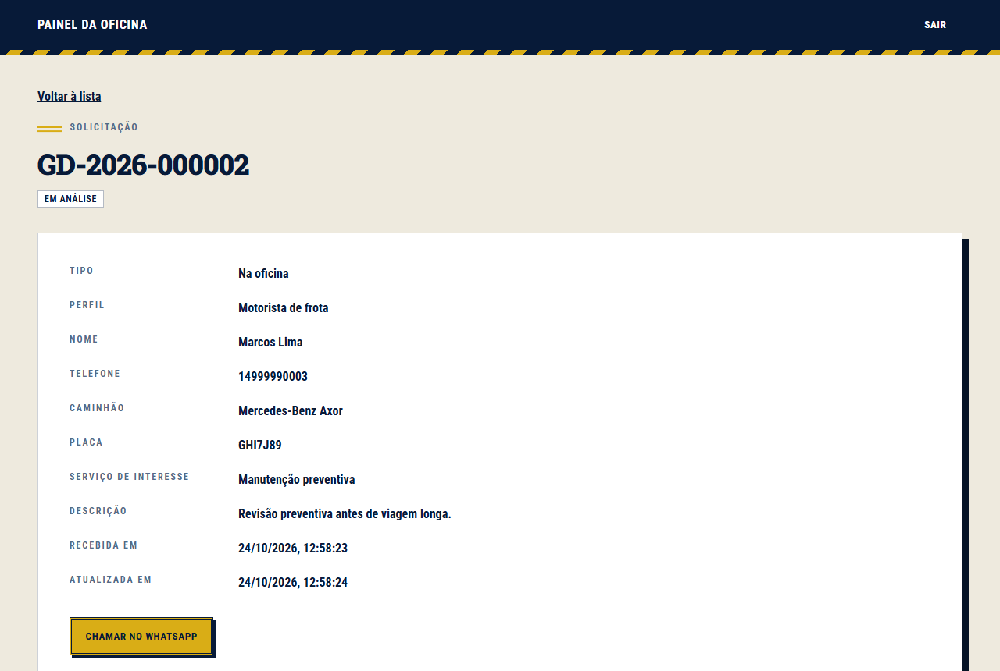
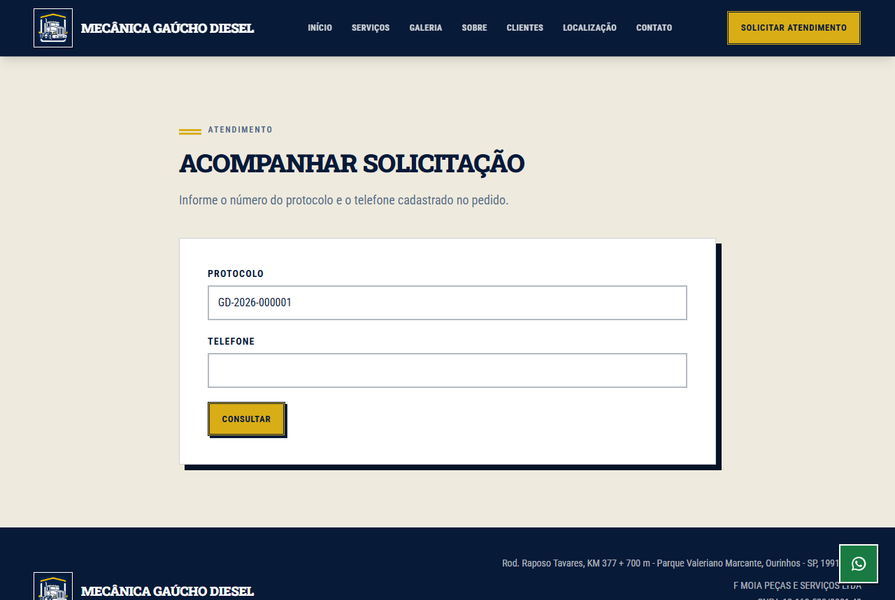

Universidade Estadual do Norte do Paraná
Campus Luiz Meneghel
Caio Nogueira
Felipe Muraro
Filipe Sudário
José Neres
Pedro Gomes
Implementação do sistema web da Mecânica Gaúcho Diesel
Atividade Curricular de Extensão
Programação para Internet, prof. Tafarel
Bandeirantes
2026
O sistema evolui o site institucional da Mecânica Gaúcho Diesel, especificado e modelado na AEX de Engenharia de Software II (versão 1.0) e publicado em mecanicagauchodiesel.com.br. Sobre esse site pronto, o grupo implementou a versão 2.0 da modelagem: um formulário para pedir atendimento na oficina ou socorro na rodovia, o banco de dados e um painel em que o proprietário acompanha os pedidos. O código está em github.com/g0mz/aex-uenp.
O sistema usa Astro com Tailwind CSS, hospedagem na Cloudflare e o banco Cloudflare D1. As páginas institucionais continuam estáticas, e só o formulário, o painel e a consulta rodam no servidor. No banco, Solicitacao virou a tabela solicitacao, Solicitante e Caminhao viraram colunas dela e as enumerações viraram colunas com restrição CHECK. O cliente insere pedidos pelo formulário, e o proprietário lista, consulta, altera a situação e exclui pelo painel (tabela 1).
| Tela | Endereço | Casos de uso | Histórias |
|---|---|---|---|
| Página inicial | / | UC01 a UC04 | HU01 a HU08 |
| Solicitar atendimento | /solicitar | UC05, UC06 | HU09, HU10 |
| Confirmação com protocolo | /solicitar/enviada | UC05, UC06 | HU09, HU10 |
| Entrada no painel | /painel/entrar | UC07 | HU11 |
| Lista de solicitações | /painel | UC08 | HU12 |
| Detalhe da solicitação | /painel/[id] | UC09 a UC13 | HU13, HU14, HU15 |
| Acompanhar solicitação | /acompanhar | UC14 | HU16 |
| Bot do Telegram | /telegram | UC15, UC16 | HU17, HU18 |
A função validar() aplica a RN07, gerarProtocolo() monta o protocolo GD-2026-000123 (RF06) e alterarSituacao() recusa a situação Recusada sem motivo (RN09) e "Socorro a caminho" em pedido de oficina. Dezessete testes automatizados cobrem essas regras, a sessão e os avisos. A senha fica em um segredo do servidor (RNF06). No Lighthouse, a página inicial teve nota de desempenho entre 92 e 96 no celular e 99 no computador, acima do mínimo do RNF02.
O cadastro dos serviços do site (HU19, RF15) ficou fora, e com ele a RN05, que depende desse cadastro e dos valores de preço fixo que o proprietário ainda vai definir. Orçamento, financeiro e estoque continuam no sistema interno da oficina.
A modelagem de Engenharia de Software II cobria só o site estático. Na versão 2.0 ela foi estendida com melhorias, que seguem a numeração anterior e não ganharam diagramas novos (tabela 2).
| Item | O que mudou |
|---|---|
| Escopo e atores | Entraram HU09 a HU19, RF05 a RF15, RN04 a RN10 e UC05 a UC16. O proprietário, que só se beneficiava do site, passou a operar o painel, e entrou o ator Telegram. |
| HU03 | O botão "Solicitar atendimento" abria o WhatsApp e agora leva ao formulário. O botão fixo continua abrindo o WhatsApp. |
| Classes | As classes do site continuam. Entraram Solicitacao, Solicitante (nome escolhido para não se confundir com o ator Cliente), Caminhao, SolicitacaoRepositorio, Notificador e Proprietario. Elas viraram módulos em TypeScript, e o repositório busca e exclui pelo número interno da solicitação. |
| RNF02 e RNF05 | Só as páginas institucionais continuam estáticas. A Cloudflare Pages deu lugar ao Cloudflare Workers com D1, porque o adaptador do Astro 7 publica o sistema como Worker, também gratuito. |
Como o painel fica na internet, o grupo acrescentou limite de tamanho nos campos, cabeçalhos de proteção e um limite da Cloudflare para tentativas seguidas de login e de envio. Um roteiro de ataques baseado no OWASP Top 10 não encontrou falhas.
Durante a construção, o grupo percebeu que o cliente não acompanhava o pedido e o proprietário só via um pedido novo ao abrir o painel. Entraram a HU16 (consultar a situação pelo protocolo e pelo telefone), a HU17 e a HU18 (avisos pelo Telegram ao cliente e ao proprietário) e a RN10: o cliente só recebe avisos se iniciar o bot pelo link do próprio pedido. A situação "Socorro a caminho" passou a valer só para pedidos de socorro.
A troca do Pages pelo Workers exigiu entender a configuração gerada pelo adaptador. No Windows, o servidor de desenvolvimento do Astro não iniciou, e os testes locais usaram npm run build e npx wrangler dev, como registra o README. No celular, o logo e a foto inicial em tamanho original deixaram o desempenho abaixo de 90, e foram reduzidos.
Os cinco integrantes desenvolveram o sistema em conjunto, em um único computador. Por isso os commits do repositório estão todos no nome de Pedro Gomes e não refletem a participação de cada um.






